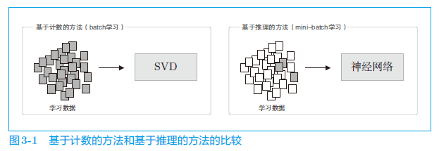
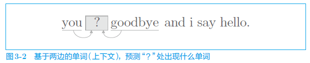
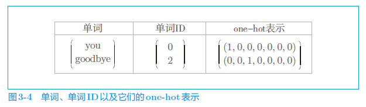
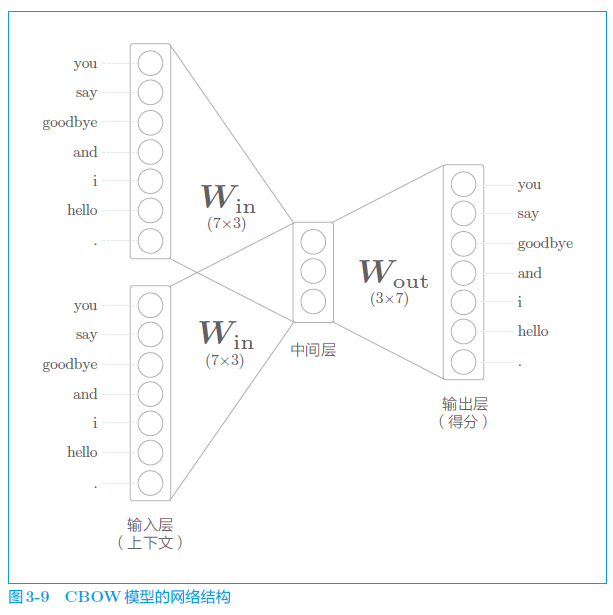
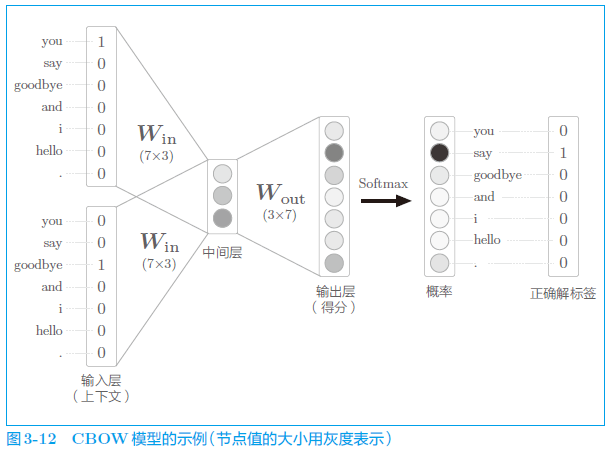
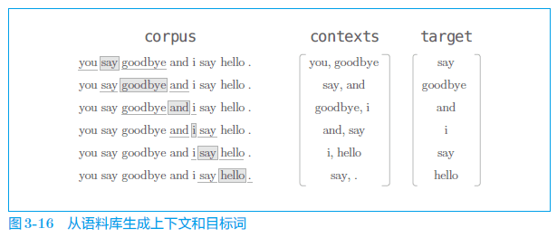
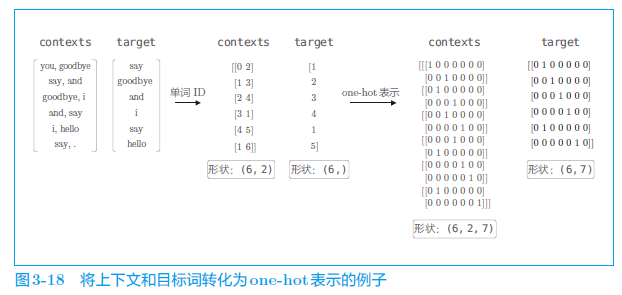
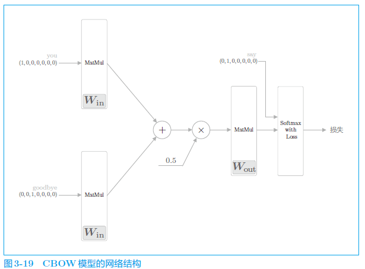
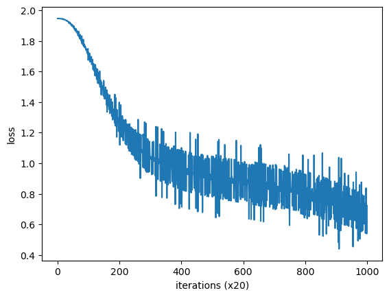

正文
3.1 基于推理的方法和神经网络
向量表示单词的研究：
-
基于计数的方法
-
基于推理的方法
两者在获得单词含义的方法上差别很大，但两者的背景都是分布式假设。
3.1.1 基于计数的方法的问题
对于一个 的矩阵，SVD 的复杂度是 ，这表示计算量与 的立方成比例增长。如此大的计算成本，即便是超级计算机也无法胜任。实际上，利用近似方法和稀疏矩阵的性质，可以在一定程度上提高处理速度，但还是需要大量的计算资源和时间。
{kind=link}

3.1.2 基于推理的方法的概要
基于推理的方法的主要操作是“推理”。当给出周围的单词（上下文）时，预测“？”处会出现什么单词，这就是推理。
{kind=link}

3.1.3 神经网络中的单词的处理方法
我们将使用神经网络来处理单词。但是，神经网络无法直接处理 you 或 say 这样的单词，要用神经网络处理单词，需要先将单词转化为固定长度的向量。对此，一种方式是将单词转换为 one-hot 表示（one-hot 向量）。在 one-hot 表示中，只有一个元素是 1，其他元素都是 0。
import numpy as np
c = np.array([[1, 0, 0, 0, 0, 0, 0]]) # 输入
W = np.random.randn(7, 3) # 权重
h = np.dot(c, W) # 中间节点
print(h)[[-0.7200455 -0.12248471 -0.19002763]]
{kind=link}

3.2 简单的 word2vec
使用由原版 word2vec 提出的名为 **continuous bag-of-words（CBOW）**的模型作为神经网络。
3.2.1 CBOW 模型的推理
{kind=link}

中间层的神经元是各个输入层经全连接层变换后得到的值的“平均”。
经全连接层变换后，第 1 个输入层转化为 ，第 2 个输入层转化为 ，那么中间层的神经元是 。
从输入层到中间层的变换由全连接层（权重是 ）完成。此时，全连接层的权重 是一个 的矩阵。提前剧透一下，这个权重就是我们要的单词的分布式表示。如此获得的向量很好地对单词含义进行了编码。这就是 word2vec 的全貌。
import sys
sys.path.append('..')
import numpy as np
from common.layers import MatMul
# 样本的上下文数据
c0 = np.array([[1, 0, 0, 0, 0, 0, 0]])
c1 = np.array([[0, 0, 1, 0, 0, 0, 0]])
# 权重的初始值
W_in = np.random.randn(7, 3)
W_out = np.random.randn(3, 7)
# 生成层
in_layer0 = MatMul(W_in)
in_layer1 = MatMul(W_in)
out_layer = MatMul(W_out)
# 正向传播
h0 = in_layer0.forward(c0)
h1 = in_layer1.forward(c1)
h = 0.5 * (h0 + h1)
s = out_layer.forward(h)
print(s)[[-1.6202109 0.75824908 -0.05364709 -0.39814822 -0.37373042 0.51207421
0.8510953 ]]
CBOW 模型是没有使用激活函数的简单的网络结构。
3.2.2 CBOW 模型的学习
{kind=link}

上下文是 you 和 goodbye，正确解标签（神经网络应该预测出的单词）是 say。这时，如果网络具有“良好的权重”，那么在表示概率的神经元中，对应正确解的神经元的得分应该更高。
CBOW 模型的学习就是调整权重，以使预测准确。其结果是，权重 （确切地说是 和 两者）学习到蕴含单词出现模式的向量。
对其进行学习只是使用一下 Softmax 函数和交叉熵误差。首先，使用 Softmax 函数将得分转化为概率，再求这些概率和监督标签之间的交叉熵误差，并将其作为损失进行学习。
3.2.3 word2vec 的权重和分布式表示
word2vec 中使用的网络有两个权重，分别是输入侧的全连接层的权重（）和输出侧的全连接层的权重（）。
一般而言，输入侧的权重 的每一行对应于各个单词的分布式表示。另外，输出侧的权重 也同样保存了对单词含义进行了编码的向量。
3.3 学习数据的准备
3.3.1 上下文和目标词
{kind=link}

word2vec 中使用的神经网络的输入是上下文，它的正确解标签是被这些上下文包围在中间的单词，即目标词。
将语料库中的目标单词作为目标词，将其周围的单词作为上下文提取出来。我们对语料库中的所有单词都执行该操作（两端的单词除外），可以得到 contexts（上下文）和 target（目标词）。
将语料库的文本转换成单词 ID
import sys
sys.path.append('..')
from common.util import preprocess
text = 'You say goodbye and I say hello.'
corpus, word_to_id, id_to_word = preprocess(text)
print(corpus)
print(id_to_word)[0 1 2 3 4 1 5 6]
{0: 'you', 1: 'say', 2: 'goodbye', 3: 'and', 4: 'i', 5: 'hello', 6: '.'}
实现生成上下文和目标词的函数
def create_contexts_target(corpus, window_size=1):
"""
corpus: 单词 ID 列表
window_size: 上下文的窗口大小
return: NumPy 多维数组格式的上下文和目标词
"""
# 就目标词而言，target[0] 保存的是第 0 个目标词，target[1] 保存的是第 1 个目标词。
target = corpus[window_size:-window_size]
"""
contexts 是二维数组。此时，contexts 的第 0 维保存的是各个上下文数据。
具体来说，contexts[0] 保存的是第 0 个上下文，context[1] 保存的是第 1 个上下文。
"""
contexts = []
for idx in range(window_size, len(corpus)-window_size):
cs = []
for t in range(-window_size, window_size + 1):
if t == 0:
continue
cs.append(corpus[idx + t])
contexts.append(cs)
return np.array(contexts), np.array(target)contexts, target = create_contexts_target(corpus, window_size=1)
print(contexts)[[0 2]
[1 3]
[2 4]
[3 1]
[4 5]
[1 6]]
这样就从语料库生成了上下文和目标词，后面只需将它们赋给 CBOW 模型即可。不过，因为这些上下文和目标词的元素还是单词 ID，所以还需 要将它们转化为 one-hot 表示。
3.3.2 转换为 one-hot 表示
{kind=link}

import sys
sys.path.append('..')
from common.util import preprocess, create_contexts_target, convert_one_hot
text = 'You say goodbye and I say hello.'
corpus, word_to_id, id_to_word = preprocess(text)
contexts, target = create_contexts_target(corpus, window_size=1)
vocab_size = len(word_to_id)
target = convert_one_hot(target, vocab_size)
contexts = convert_one_hot(contexts, vocab_size)3.4 CBOW 模型的实现
{kind=link}

import sys
sys.path.append('..')
import numpy as np
from common.layers import MatMul, SoftmaxWithLoss
class SimpleCBOW:
def __init__(self, vocab_size, hidden_size):
"""
vocab_size: 词汇个数
hidden_size: 中间层的神经元个数
"""
V, H = vocab_size, hidden_size
# 初始化权重
W_in = 0.01 * np.random.randn(V, H).astype('f') # 初始化将使用 32 位的浮点数
W_out = 0.01 * np.random.randn(H, V).astype('f')
# 生成层
self.in_layer0 = MatMul(W_in)
self.in_layer1 = MatMul(W_in)
self.out_layer = MatMul(W_out)
self.loss_layer = SoftmaxWithLoss()
# 将所有的权重和梯度整理到列表中
layers = [self.in_layer0, self.in_layer1, self.out_layer]
self.params, self.grads = [], []
for layer in layers:
self.params += layer.params
self.grads += layer.grads
# 将单词的分布式表示设置为成员变量
self.word_vecs = W_in
def forward(self, contexts, target):
"""
神经网络的正向传播 forward() 函数。
这个函数接收参数 contexts 和 target，并返回损失（loss）。
"""
h0 = self.in_layer0.forward(contexts[:, 0])
h1 = self.in_layer1.forward(contexts[:, 1])
h = (h0 + h1) * 0.5
score = self.out_layer.forward(h)
loss = self.loss_layer.forward(score, target)
return loss
def backward(self, dout=1):
"""
反向传播
"""
ds = self.loss_layer.backward(dout)
da = self.out_layer.backward(ds)
da *= 0.5
self.in_layer1.backward(da)
self.in_layer0.backward(da)
return None学习的实现
CBOW 模型的学习和一般的神经网络的学习完全相同。首先，给神经网络准备好学习数据。然后，求梯度，并逐步更新权重参数。
import sys
sys.path.append('..')
from common.trainer import Trainer
from common.optimizer import Adam
from common.util import preprocess, create_contexts_target, convert_one_hot
window_size = 1
hidden_size = 5
batch_size = 3
max_epoch = 1000
text = 'You say goodbye and I say hello.'
corpus, word_to_id, id_to_word = preprocess(text)
vocab_size = len(word_to_id)
contexts, target = create_contexts_target(corpus, window_size)
target = convert_one_hot(target, vocab_size)
contexts = convert_one_hot(contexts, vocab_size)
model = SimpleCBOW(vocab_size, hidden_size)
optimizer = Adam()
trainer = Trainer(model, optimizer)
trainer.fit(contexts, target, max_epoch, batch_size)
trainer.plot(){kind=link}

查看学习后的权重参数
word_vecs = model.word_vecs
for word_id, word in id_to_word.items():
print(word, word_vecs[word_id])you [-0.9274265 -0.91214865 -0.9109259 0.8992449 -1.6783223 ]
say [ 1.1131934 1.0601219 1.1271317 -1.1453978 -1.2170266]
goodbye [-0.9434733 -0.9451493 -1.0034578 1.0183493 0.01961206]
and [ 0.68801135 1.3125733 0.7976222 -0.66661966 -1.7473713 ]
i [-0.9705925 -0.96961325 -1.0059276 1.0296363 0.02202316]
hello [-0.9177436 -0.9189522 -0.90853983 0.89148486 -1.6829524 ]
. [ 1.2674404 0.2086714 1.1918164 -1.3567644 0.25613624]
这里使用的小型语料库并没有给出很好的结果。当然，主要原因是语料库太小了。如果换成更大、更实用的语料库，相信会获得更好的结果。但是，这样在处理速度方面又会出现新的问题，这是因为当前这个 CBOW 模型的实现在处理效率方面存在几个问题。
3.5 word2vec 的补充说明
3.5.1 CBOW 模型和概率
给定上下文 和 时目标词为 的概率。使用后验概率：
CBOW 模型的损失函数只是对上式的概率取 ，并加上负号。顺便提一下，这也称为负对数似然（negative log likelihood）。
上式是一笔样本数据的损失函数。如果将其扩展到整个语料库：
3.5.2skip-gram 模型
{kind=link}
skip-gram 是反转了 CBOW 模型处理的上下文和目标词的模型。
-
CBOW 模型从上下文的多个单词预测中间的单词（目标词）
-
skip-gram 模型则从中间的单词（目标词）预测周围的多个单词（上下文）
skip-gram 可以建模为：
“当给定 时， 和 同时发生的概率”。
带入交叉熵损失函数，推导出 skip-gram 模型的损失函数：
3.5.3 基于计数于基于推理
-
基于计数的方法通过对整个语料库的统计数据进行一次学习来获得单词的分布式表示
-
基于推理的方法则反复观察语料库的一部分数据进行学习（mini-batch 学习）
在 word2vec 之后，有研究人员提出了 GloVe 方法。GloVe 方法融合了基于推理的方法和基于计数的方法。该方法的思想是，将整个语料库的统计数据的信息纳入损失函数，进行 mini-batch 学习（具体请参考论文）。据此，这两个方法论成功地被融合在了一起。
3.6 小结
-
基于推理的方法以预测为目标，同时获得了作为副产物的单词的分布式表示
-
word2vec 是基于推理的方法，由简单的 2 层神经网络构成
-
word2vec 有 skip-gram 模型和 CBOW 模型
-
CBOW 模型从多个单词（上下文）预测 1 个单词（目标词）
-
skip-gram 模型反过来从 1 个单词（目标词）预测多个单词（上下文）
-
由于 word2vec 可以进行权重的增量学习，所以能够高效地更新或添加单词的分布式表示